具身数据生产 · 实验图册 v002
19 张图全部以 SVG 展示；点击图形打开矢量原图，可继续放大。每张 PNG 为 300 dpi。
数据截至 2026-10-20；本次仅重绘排版，未新增仿真或训练。
下载矢量 PDF 图册 · 原始指标索引 CSV
01 · 共享配置接口
16/16 项接口与判据检查通过
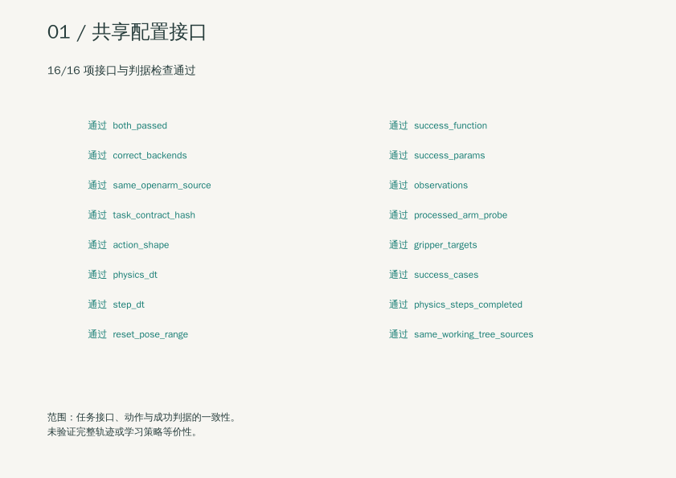
打开矢量原图 · 下载 300 dpi PNG
16 项检查；接口一致性；不是学习策略等价性
02 · 24 条导出对照
三模式严格终态均为 23/24；最终文件吞吐最高提高 29.8%
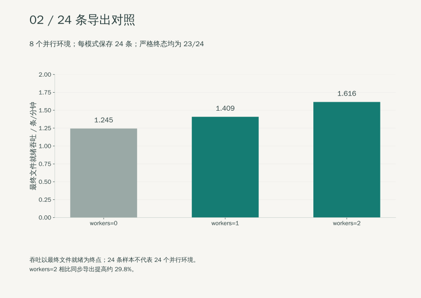
打开矢量原图 · 下载 300 dpi PNG
3 模式，各 24 条；最终文件就绪；24 条不是 24 并行环境
03 · 16 条成功目标的导出对照
四配置各 17 次尝试、16 次生成成功；auto 提高约 60.2%
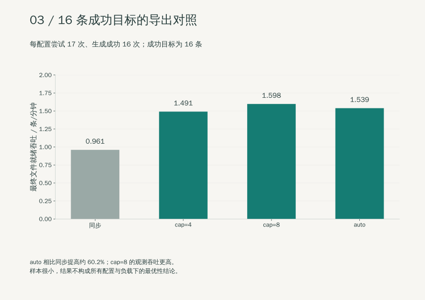
打开矢量原图 · 下载 300 dpi PNG
4 配置 × 17 次尝试；最终文件就绪；各保存 16 条终态通过
04 · 固定尝试预算产能
20 个单元、74 次尝试；确认 seed 的提高为 34.5%–37.7%
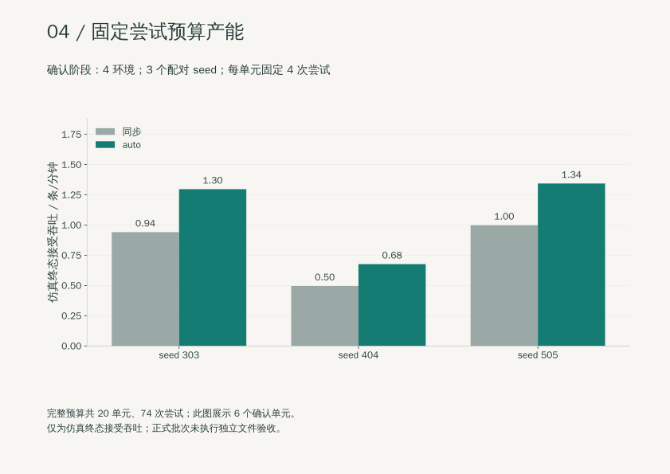
打开矢量原图 · 下载 300 dpi PNG
5 seed；74 次尝试；仿真终态接受吞吐；正式批次未独立文件验收
05 · 内部耗时归因
8 对动作哈希匹配；导出等待下降 93.8%
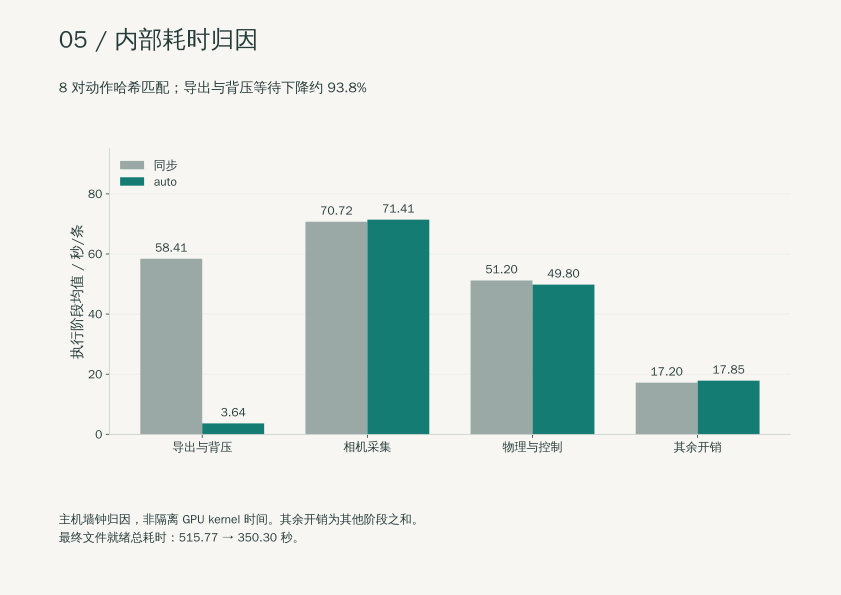
打开矢量原图 · 下载 300 dpi PNG
4 环境 × 8 对；主机墙钟归因；不是隔离 GPU kernel 时间
06 · OpenArm 位姿随机化检查
256 个 reset 位姿，9/9 项检查通过
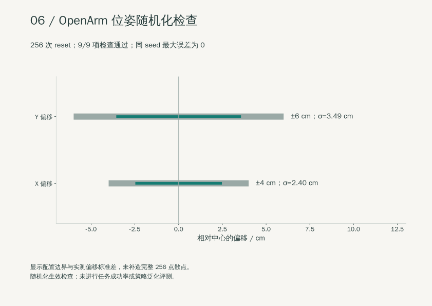
打开矢量原图 · 下载 300 dpi PNG
256 reset；9 项检查；随机化生效检查；不是完整任务或策略成功率
07 · G1 视觉随机化
7 段尝试中 6 段成功；纯视觉组合动作与基线一致
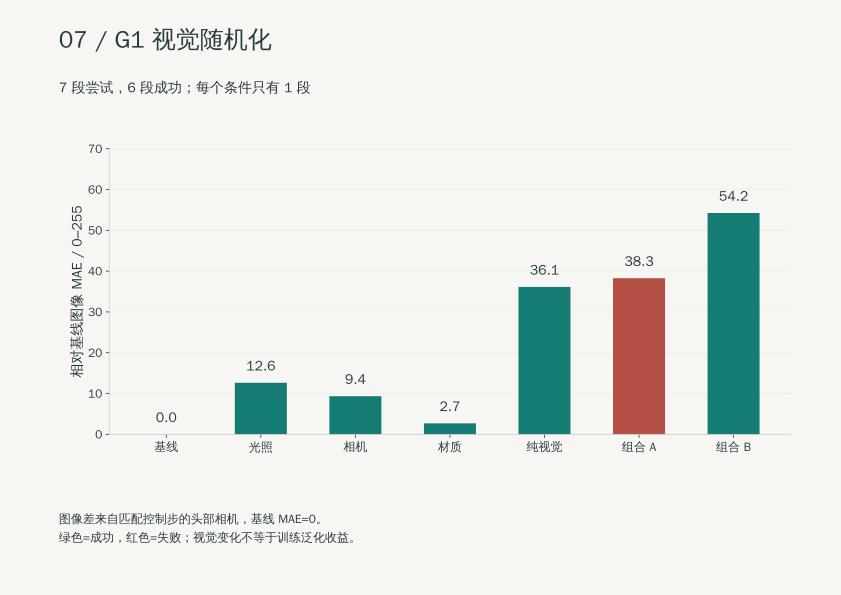
打开矢量原图 · 下载 300 dpi PNG
7 段；G1 家庭搬运；尚未验证训练泛化收益
08 · cuRobo v1/v2 最小对照
完整任务 v1=5/5，v2=4/5；两版规划请求均 10/10
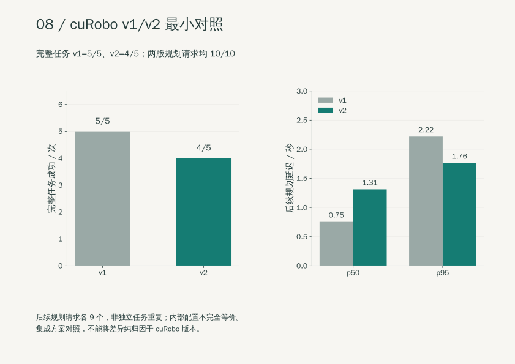
打开矢量原图 · 下载 300 dpi PNG
每版 5 任务；9 个后续请求；集成方案对照；请求非独立任务；内部配置不完全等价
09 · cuRobo v2 补跑
v2 生成并保存 16 条，严格终态通过 15 条
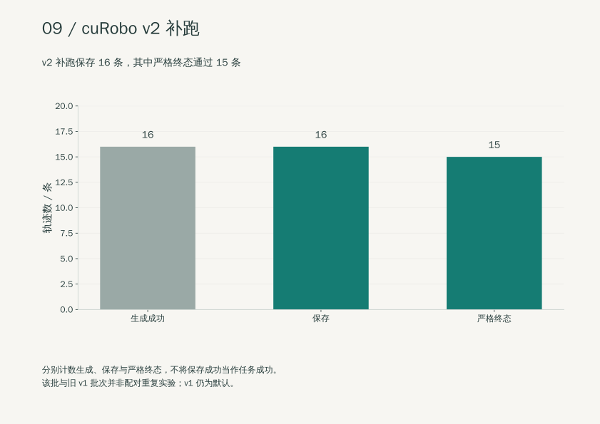
打开矢量原图 · 下载 300 dpi PNG
v2 保存 16 条；生成、保存与严格终态分别报告；v1 仍为默认
10 · Franka 配对避障
有障碍时 IK 0/3，cuRobo＋IK 3/3；无障碍均 3/3
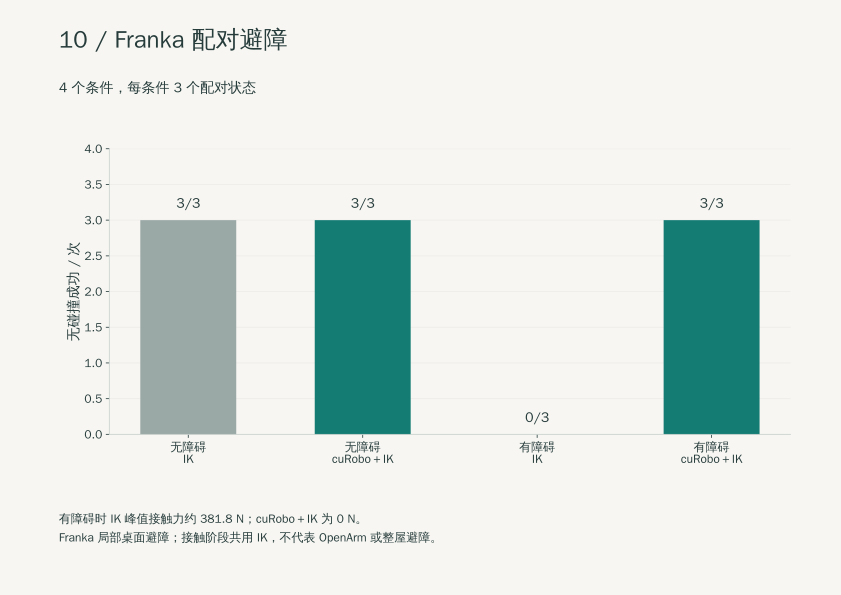
打开矢量原图 · 下载 300 dpi PNG
4 条件 × 3 配对状态；局部桌面避障；不代表 OpenArm 或整屋避障
11 · 香蕉多传感示范
950 帧；双指搬运法向力中位数约 38.7/38.8 N
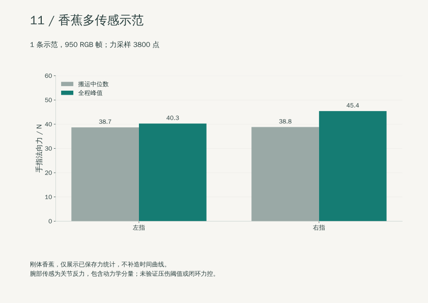
打开矢量原图 · 下载 300 dpi PNG
1 条，19 秒；刚体香蕉；腕部为关节反力；不是压伤或力控验证
12 · OpenArm HDR 小批生产
5 批各 1 次，均通过已有验收
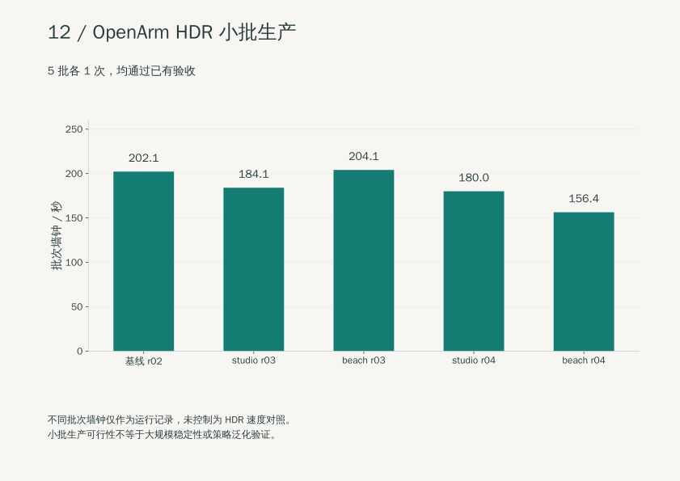
打开矢量原图 · 下载 300 dpi PNG
5 批 × 1 次；生产可行性；不同墙钟不构成 HDR 加速证据
13 · 历史 GPU 并发观测
4–5 进程峰值 70%；均值约 9.4%–32.4%
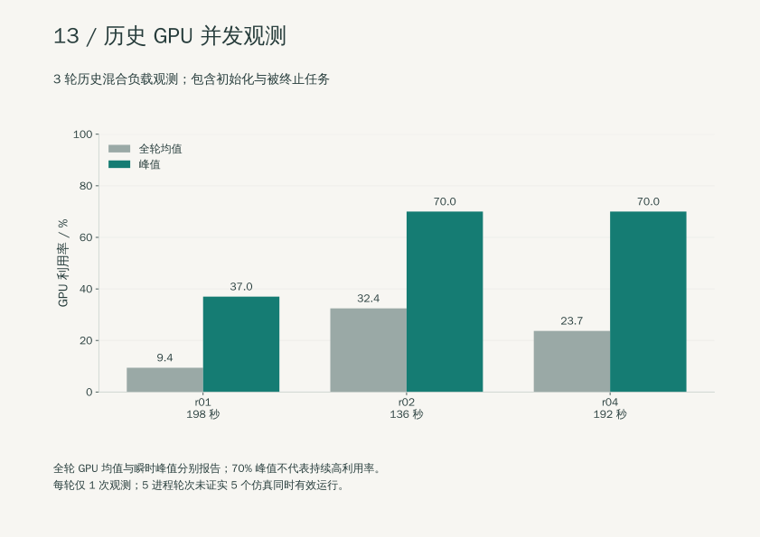
打开矢量原图 · 下载 300 dpi PNG
历史混合工作负载；峰值不是持续高利用率；部分轮次含被终止任务
14 · 历史 100 条成功目标运行
63 次开始、55 次完成、8 次未完成；最终运行中断
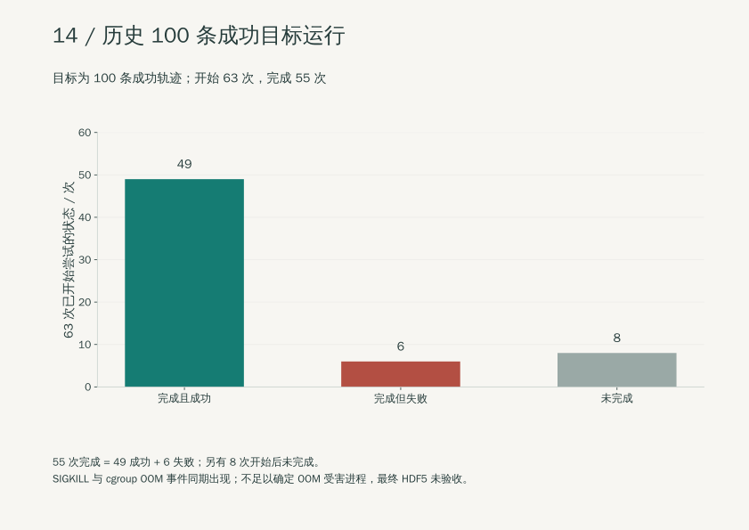
打开矢量原图 · 下载 300 dpi PNG
目标 100 条成功；不是固定 100 次尝试；SIGKILL 并伴 cgroup OOM 事件；不能据此确定 OOM 受害进程
15 · 三路相机黑帧检查
右腕 5453/5453 帧近黑；左腕仅 4 个首帧，第三视角为 0
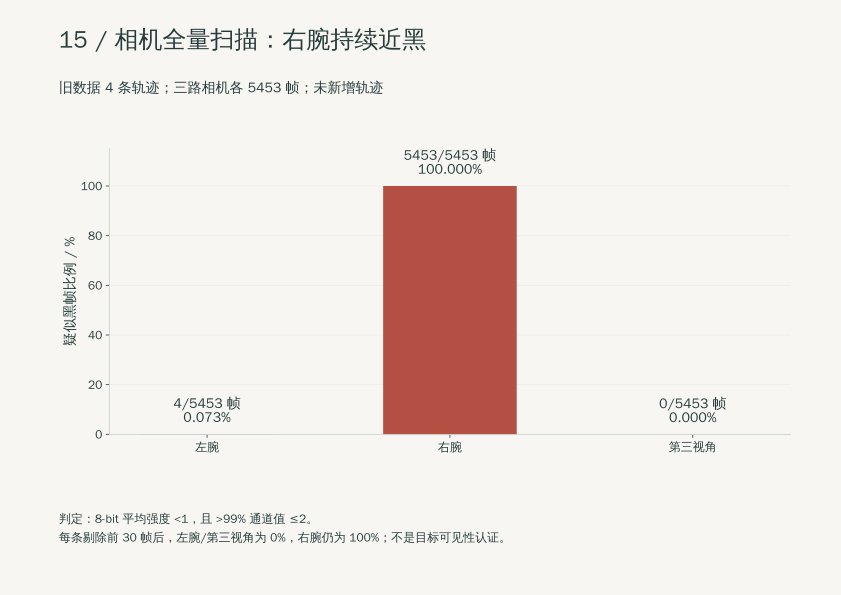
打开矢量原图 · 下载 300 dpi PNG
4 条；各相机 5453 帧；全像素扫描；不是多视角训练通过
16 · 8 环境隔离导出回归
8 次完成、8 条保存、8 条完整回读；7 条严格终态成功
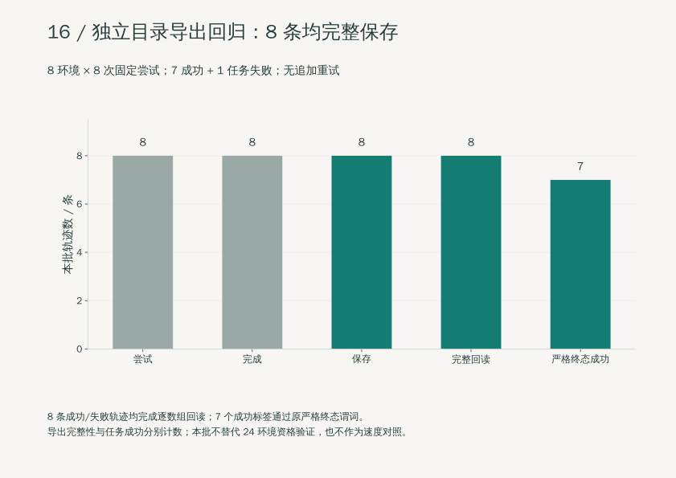
打开矢量原图 · 下载 300 dpi PNG
8 次尝试；真实 GPU 回归；不是 24 并行或长期稳定性验证
17 · 24 环境内存准入
有效可用 93.44 GiB，低于保守准入要求 144 GiB
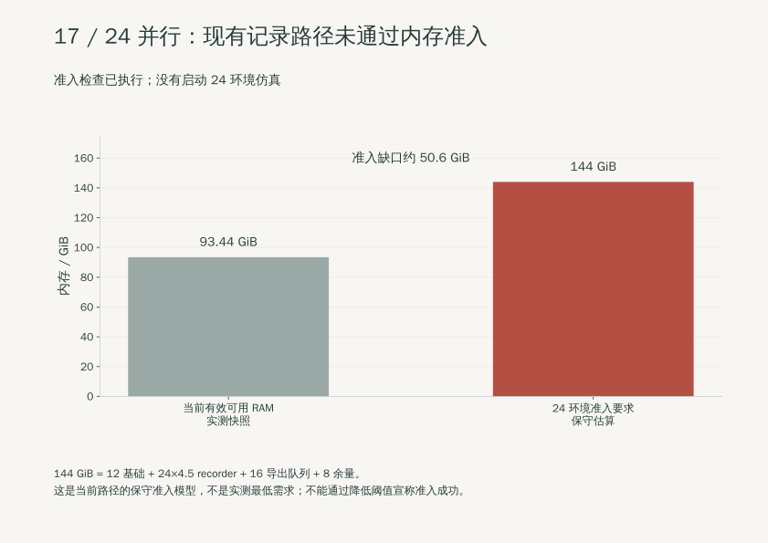
打开矢量原图 · 下载 300 dpi PNG
1 次资源快照；资源准入受阻；无 24 环境运行结果
18 · 失败样本终态诊断
线速度约 0.193 m/s、角速度约 6.19 rad/s，均超过原阈值
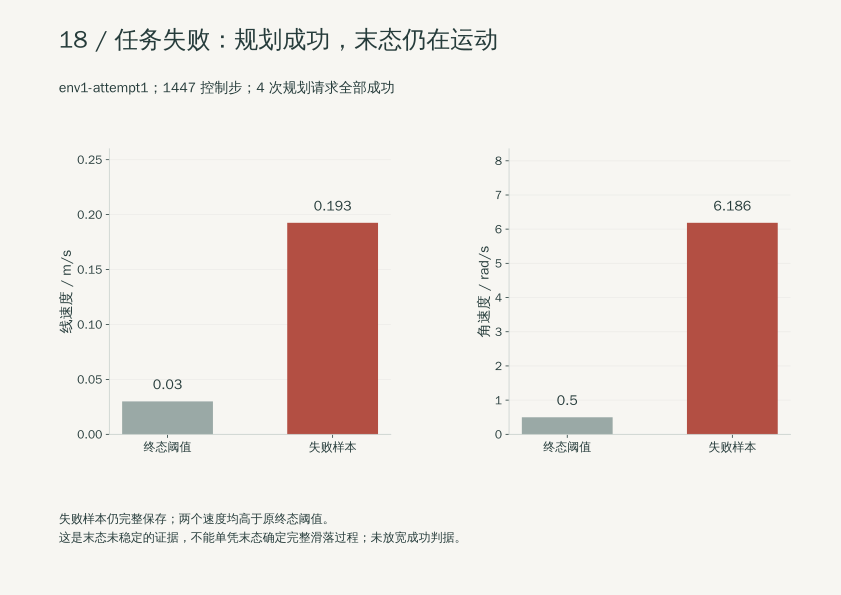
打开矢量原图 · 下载 300 dpi PNG
1 个失败样本；物理终态检查；不等于接口或导出失败
19 · LeRobot v3 转换与回读
4 条、5453 帧；数值精确匹配，三路视频完整解码
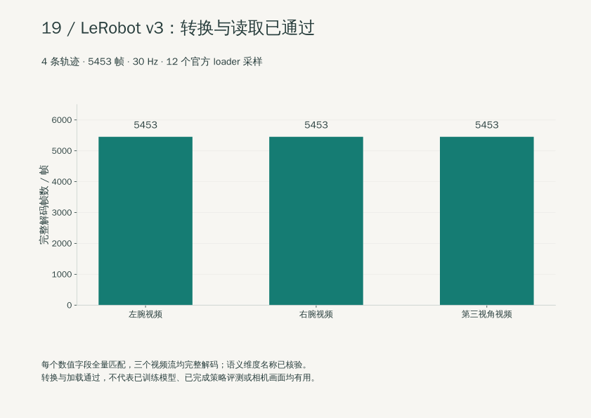
打开矢量原图 · 下载 300 dpi PNG
4 条；12 个 loader 采样；CPU 转换与回读；尚未训练或评测学习策略